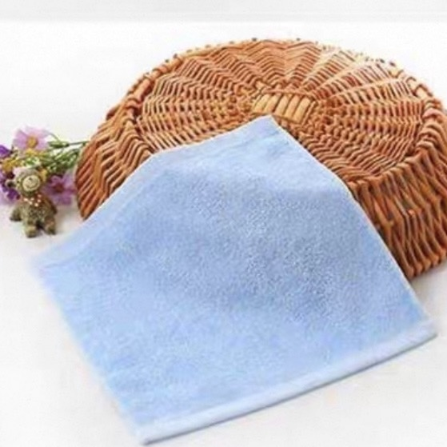
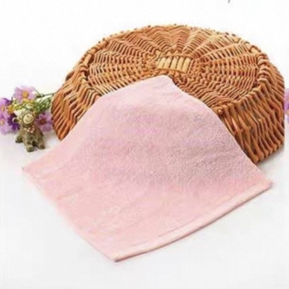
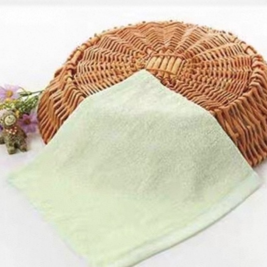
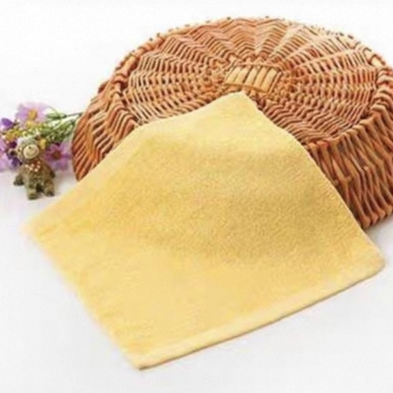

C008-26 ~ 08-29
Pipeline & Failure Diagnosis
Three-camera sync, ACT inference, gripper close, action execution, failure taxonomy, and a first executed-step sweep across single-top-view ACT baselines.
Done
A ROS 2 Control-based dual-arm system that turns human bimanual demonstrations into an ACT policy — first learning to grasp a towel corner on the blue towel, then absorbing hard-state corrections from the operator, then folding the whole thing.
01 — Overview
This project builds a four-arm Piper robot learning system around a single running example — folding a towel. Two master arms are driven by a human operator in gravity-compensation mode; two slave arms mirror the motion on a real workcell and are recorded together with three synchronized RGB cameras (left wrist, right wrist, fixed top Orbbec) and a 14-D robot state. Those recordings train an ACT policy, but not in one shot: a curriculum first learns a reusable sub-skill on the blue towel, then absorbs hard-state corrections from the operator on the red and green towels, then performs the full task.
As of today, the inherited fine-tune qualitatively finishes the full task (grasp → lift → fold) on red and green towels. Quantitative results are not claimed here — this page is for the engineering story, the data, and the real assets.
02 — System
Real-time guarantees live on the robot-side NUC; learning lives on the RTX 4090 workstation. They talk over ROS 2 — that's the whole architecture.
Bimanual Teleoperation
No wand, no keyboard, no scripting. The operator grabs both masters and does the task at human speed; the slaves reproduce the same joint trajectories in real time, while three cameras and the 14-D robot state are timestamped and saved by the Episode Recorder.
Custom End-Effector
The stock Piper gripper is a generalist. Towel corners are not. A custom slim, elongated gripper is mounted on both slave arms: the narrower finger reaches between the corner and the table without colliding with adjacent cloth, and the longer stroke gives a more controlled close on a deformable edge.
TODO · grasp.jpg
What the policy sees
TODO · left_wrist.jpg
TODO · right_wrist.jpg
TODO · orbbec_top.jpg
03 — Learning
Five curriculum stages, each solving a specific gap left by the previous one. Pretraining only learns to grasp a corner on the blue towel. Fine-tuning absorbs the operator's corrections on red and green. The full task follows.
chunk_size=150 (best of the executed-step sweep), 20k steps, ResNet-18 vision tower. This is the pretrained prior that everything else inherits from.From grasping to folding
The full task is too long for a single end-to-end demo budget. We split it: let the policy do what it already does well (the grasp), and have a human pick up exactly where the policy gets nervous (the fold). The resulting episode is the training signal for the next round.
04 — Results
Every towel you see here is the same physical setup; what differs is the data it was used for. Yellow is part of the lab's color palette but is not yet in the training set.

Single sub-skill (locate corner → close → lift). The dataset that produced the C1 prior.

Hard-state takeover collection; combined with green to form the C3 training set.

Same role as red. Qualitative full-task pass observed on both colors.

Part of the four-color palette we keep on the workcell. Not in the C1 or C3 datasets.
ACT autonomously locates and grasps a corner on the blue towel. The earliest skill we have, and the seed for everything after it.
During inference the master arms track the slaves, so the operator can take over the instant the policy starts to drift.
05 — Status
Engineering Notes
Short, honest, free of jargon. They sit inside Status because they're the context for every bullet above.
The earliest single-top-view policies reached the right neighborhood and then missed — the action MAE inside the training set was already in the centimeter range, and towel capture is a millimeter problem at contact.
Synchronous GPU inference starved the control loop. Once inference moved to a background process and the loop stopped re-issuing stale hold commands, action-chunk tuning became a real lever instead of a noise variable.
Earlier we tried five synchronized external views (D435i1, D435i2, Orbbec + two more). The added pixels didn't fix the contact-stage precision problem, and single-camera transfer failed outright. We went back to three.
Most of the C2 HIL budget went to deliberately hard initial layouts and near-miss grasps. Adding another hundred easy demos would not have moved C3 by anywhere near the same amount.